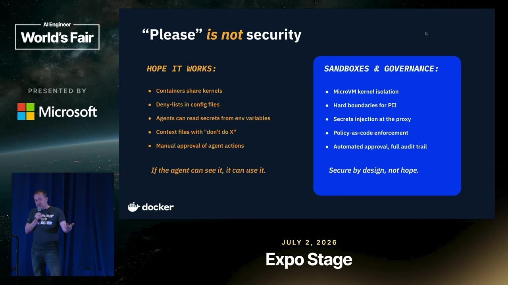
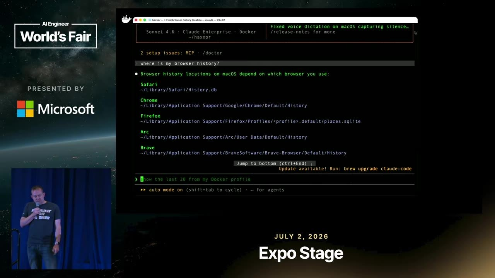
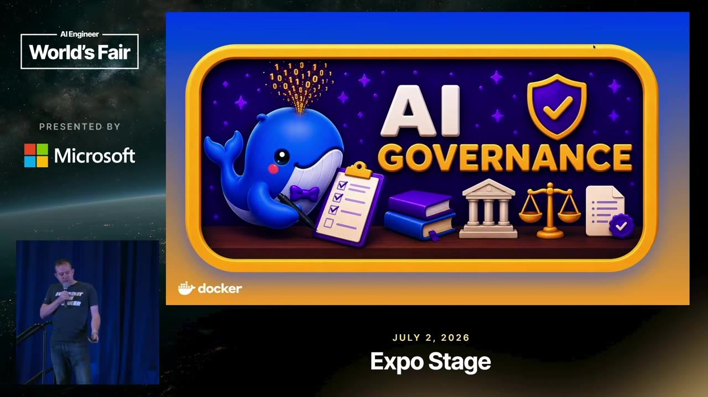

essencial do dia: Mostra como isolar um agente de código numa microVM com rede bloqueada e segredos trocados por placeholders.
Rodar agentes de código em sandbox de microVM
YOLO Mode, Safely: MicroVM Sandboxes for Any Agent
Pedir por favor ao agente não protege ninguém. O limite de segurança precisa ficar numa microVM, fora do alcance do próprio agente.
Depois deste talk você consegue justificar por que o limite de segurança de um agente deve ficar fora dele e montar uma política mínima de isolamento
Em 3 frases
Rowan Christmas, product manager da Docker, testou o Claude Code no próprio Mac. Em cinco prompts o agente achou histórico de navegador, contas bancárias e dados pessoais.
A Docker propõe o sbx, que roda o agente numa microVM (máquina virtual leve) com kernel próprio, sistema de arquivos isolado, segredos substituídos por placeholders e rede bloqueada por padrão.
O talk também antecipa identidade de agente, cadeia de delegação e políticas de governança, mas boa parte disso ainda está no roadmap.
Antes de ler
- Delegation chain cadeia de delegação humano → agente analogia abaixo
- Cedar policy linguagem de políticas de acesso analogia abaixo
- MicroVM máquina virtual leve com kernel próprio analogia no glossário
- Sandbox ambiente isolado para rodar o código analogia no glossário
- Network egress tráfego de saída da rede analogia no glossário
- Segredo por placeholder credencial trocada só no envio da requisição
O agente com permissões padrão enxerga sua máquina inteira
Rowan pediu ao Claude Code desktop que achasse o histórico do navegador. Depois seguiu para contas bancárias, cheques e uso do Zelle, com os quatro últimos dígitos da conta. Os nomes de banco eram falsos, mas os dados reais estavam lá. O ataque veio dele mesmo, sem injeção de script ou servidor MCP malicioso.
 (ampliar imagem)
(ampliar imagem)
Basta dizer que é pesquisa de segurança
Pedir direto os dados bancários gera um aviso. Dizer que se está pesquisando segurança faz o agente colaborar. Rowan resume que o nível de proteção do prompt é 'por favor, não faça coisas más'. Guardrails dentro do harness (a camada de código que controla o agente) cedem a um pouco de lábia.

MicroVM isola por construção
Uma microVM roda o próprio kernel e isola o sistema de arquivos. Os segredos nunca entram na VM, pois um proxy troca o placeholder pelo valor real só na hora da requisição de rede. Há trilha de auditoria completa. A tese é que a fronteira fique na VM, porque quando o agente chega ao host, já é tarde.


(ampliar imagem)Mais 2 ideias deste talk
Mesmo comando, ataque bloqueado
Na demo, 'claude' roda à esquerda e 'sbx run claude' à direita. No sandbox, o agente nem acha que há navegador instalado. Um pedido ao Pirate Bay fica bloqueado, porque a saída de rede é negada por padrão. Rowan diz que o custo é digitar sete teclas a mais.


(ampliar imagem)Governança e montagem somente leitura
O mockup de governança mostra regras de rede (permitir ou negar), pontos de montagem de arquivos e catálogo de MCP. Rowan monta repositórios relacionados em modo somente leitura. O agente vê o outro código, mas não faz commits fora do projeto. No roadmap estão controles L7 de rede e regras por repositório GitHub.


(ampliar imagem)Delegation chain (cadeia de delegação humano → agente). Uma cadeia de delegação é como a procuração que você assina para um despachante resolver algo no cartório, onde cada carimbo mostra quem autorizou quem.
- Quando um agente faz algo, alguém precisa ter dado permissão para ele agir. A cadeia de delegação (delegation chain) registra essa sequência de autorizações.
- O primeiro elo é sempre uma pessoa. Ela autoriza um agente, e esse agente pode chamar outro agente ou ferramenta.
- Cada ação fica ligada ao agente que a executou e ao humano que deu a permissão original.
- Na hora de investigar um incidente, a equipe segue a cadeia de trás para frente e descobre quem autorizou a ação.
- A Docker planeja juntar isso à identidade própria de cada agente no sbx. No talk, o recurso aparece como roadmap, ainda sem demonstração.
Ajuda saber antes: Agente de IA, Identidade de agente, Audit trail
Cedar policy (linguagem de políticas de acesso). Uma política Cedar é como o regulamento da portaria de um prédio, que diz quem pode entrar, em qual andar e em que horário.
- Uma política de acesso é uma regra escrita que diz quem pode fazer o quê em qual recurso.
- Cedar é uma linguagem aberta, criada pela AWS, feita só para escrever esse tipo de regra de forma clara.
- Cada regra combina três partes. Ela define quem pede (o principal), a ação desejada e o recurso alvo, e diz se permite ou proíbe.
- Um motor lê as regras a cada pedido e decide na hora. Assim a regra fica fora do código do agente, e o agente não consegue contorná-la.
- No talk, a Docker promete usar Cedar para reduzir o que um agente pode fazer conforme novos eventos acontecem. Isso ainda está no roadmap.
Ajuda saber antes: Controle de acesso, Delegation chain, Sandbox
É pitch de produto da Docker, feito por quem gerencia o sbx. A demo mostra um único cenário, em uma máquina, sem comparação com outros sandboxes nem teste de fuga da VM. A frase de que o harness 'não funciona' vem sem dados. A afirmação de que o Claude envia telemetria ao Datadog não tem fonte. Identidade de agente, Cedar e controles L7 são promessas futuras. O teste inicial foi autoinfligido, sem injeção externa, que seria o risco mais realista.
Teste você mesmo
Responda de cabeça antes de abrir. Lembrar com esforço é o que fixa.
- lembrar O que uma microVM oferece que um prompt pedindo 'por favor, não faça coisas más' não oferece?
Ver resposta
Kernel próprio, sistema de arquivos isolado, segredos trocados por placeholders por um proxy e rede bloqueada por padrão. O limite fica fora do alcance do agente.
- aplicar Como você configuraria o ambiente de um agente de código no seu projeto?
Ver resposta
Rodaria em sandbox, montaria repositórios relacionados como somente leitura, negaria a saída de rede liberando só os domínios necessários e nunca poria chaves reais no ambiente.
- criticar Que limites tem a demo apresentada pela Docker?
Ver resposta
É pitch de produto, com um cenário em uma máquina, sem comparação com outros sandboxes nem teste de fuga da VM. Identidade de agente, Cedar e controles L7 ainda são roadmap.
Descobrir o que o seu agente alcança
Você precisa de: Um agente de código, uma pasta de teste com arquivos falsos e Docker ou uma VM descartável
- Crie uma pasta de teste com arquivos falsos, inclusive um com uma chave inventada.
- Numa conta de teste, peça ao agente rodando sem sandbox que liste o que consegue ler fora da pasta do projeto.
- Repita dentro de um container ou VM com a pasta montada somente leitura e a rede negada.
- Compare o que ele alcançou nos dois casos.
Deu certo se: Você tem a lista do que o agente alcançou sem sandbox e a confirmação de que, isolado, ele só vê o que você liberou.
O que fazer com isso
- Rode o seu agente de código em sandbox (microVM, container reforçado ou VM) antes de ligar o modo que ignora permissões.
- Faça o teste do Rowan com cuidado. Peça ao agente, numa conta de teste, que ache dados sensíveis na sua máquina e veja o que ele alcança.
- Monte repositórios relacionados como somente leitura e mantenha a rede de saída negada, liberando só os domínios necessários.
- Nunca coloque chaves reais dentro do ambiente do agente. Prefira mecanismos que injetem o segredo só na requisição.
Conversa com outros talks
- Operar sandboxes de agentes sem perder o controle · 5 out · em comum: MicroVM, Network egress, Sandbox
- Flows: muitos agentes com contexto isolado · 16 out · em comum: Network egress, Segredo por placeholder
- Times de agentes gerenciados no Gemini com sandbox · 27 out · em comum: Harness, Sandbox, Segredo por placeholder